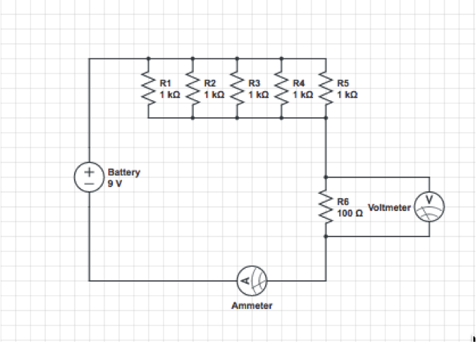
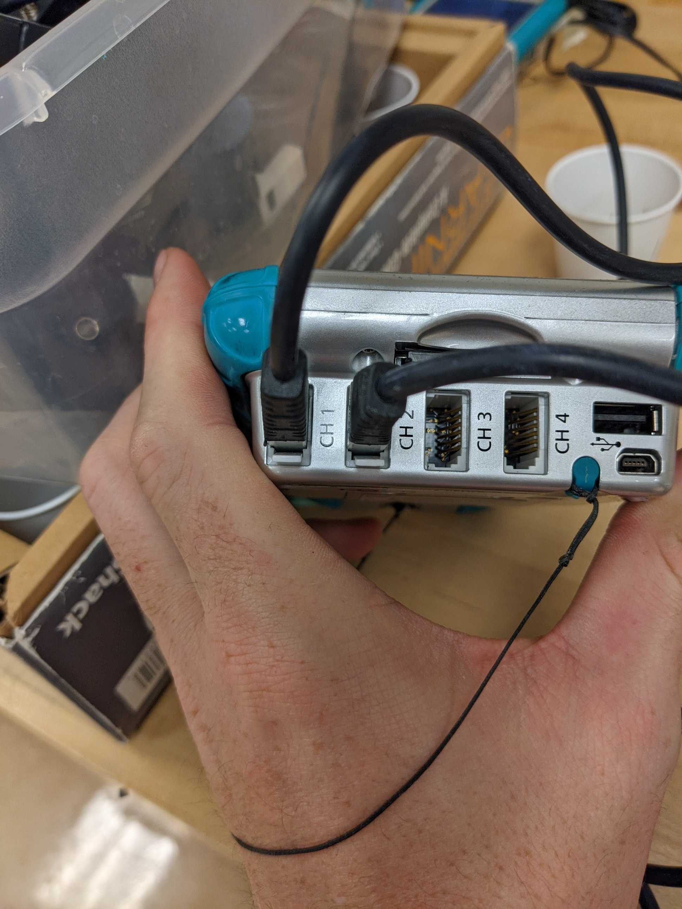
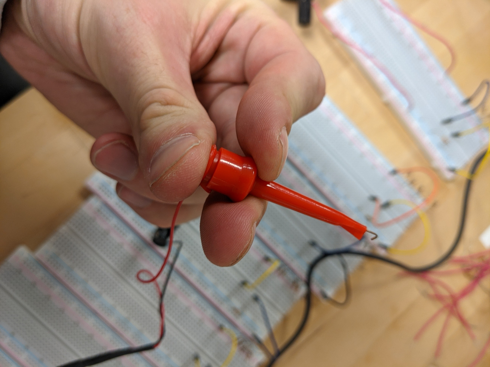
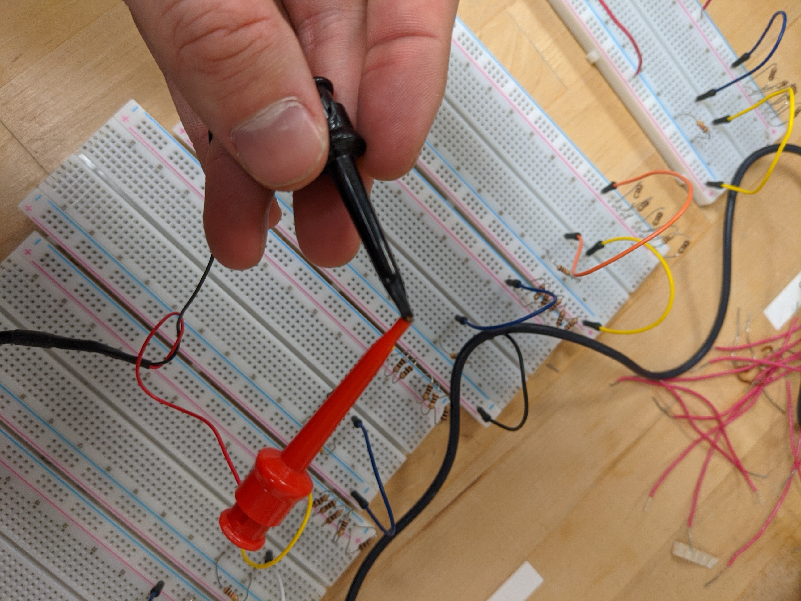
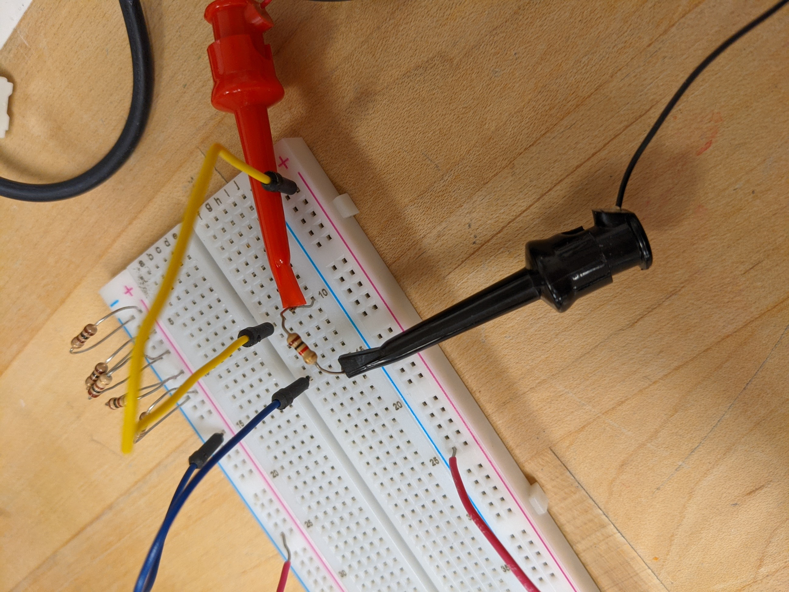
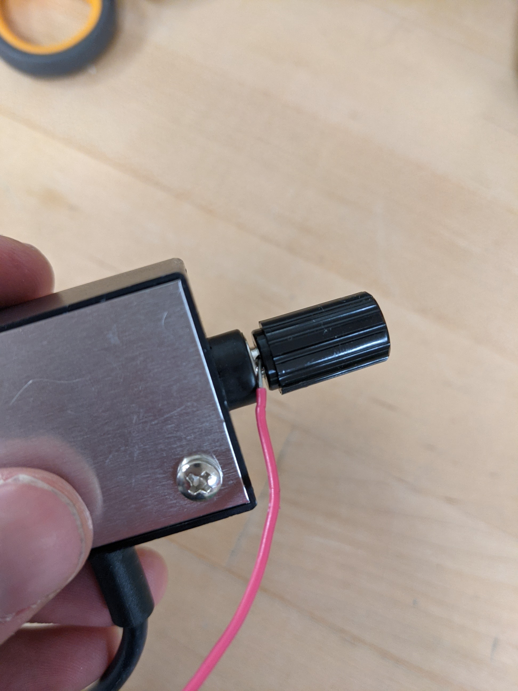
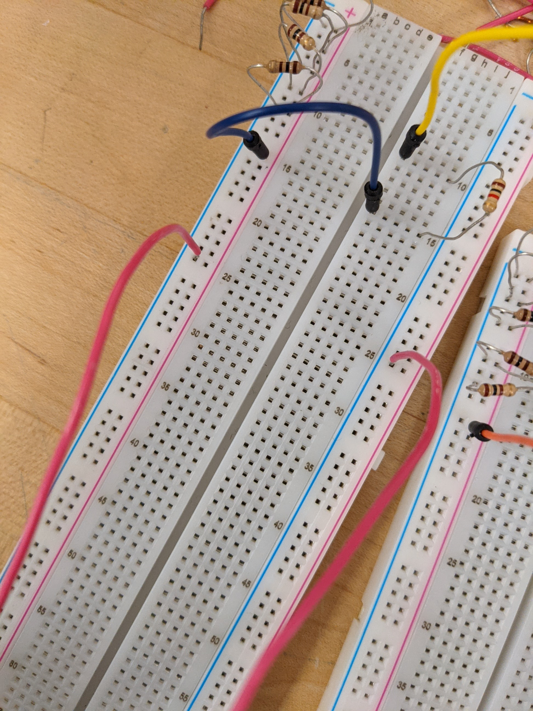
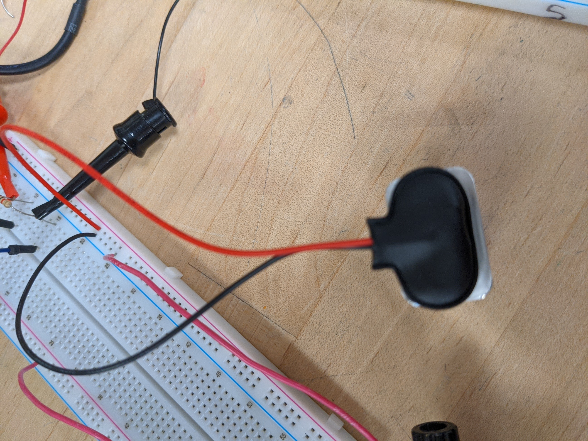

We need to find a relationship between the electrical potential, or voltage (ΔV), and the current (I) through a circuit. You will be using the following circuit to find that relationship. (Don’t worry if this doesn’t make any sense, it will later!)
|  |
Create a data table that looks like this.
| Trial | Potential (ΔV) V | Current (I) A |
|---|---|---|
| 1 | ||
| 2 | ||
| 3 | ||
| 4 | ||
| 5 |
|  |
|  |
|  |
|  |
|  |
|  |
|  |